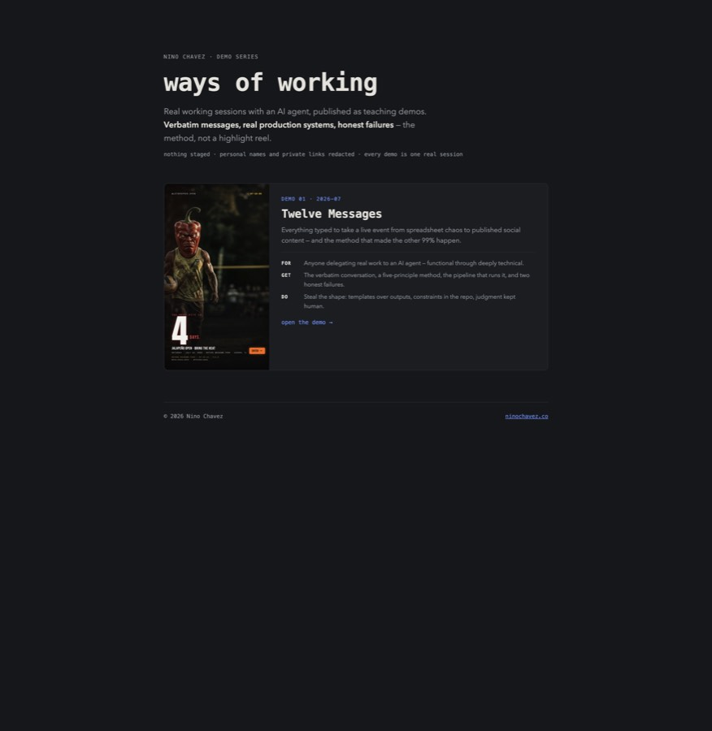

WAYS OF WORKING · DEMO 02 NINO CHAVEZ
My coding agent drives a real, logged-in Chrome — navigating, scraping, screenshotting — through ten tiny shell commands instead of an MCP server. This is the cost math, the design, and what broke.
$ browse-shot https://demos.ninochavez.co --out /tmp/demos.png /tmp/demos.png
→ or scroll to advance · ← to go back
02 THE TAX
MCP browser tools ship their entire instruction manual — every command's schema — into the agent's context before any work happens, in every conversation, whether or not the browser is ever touched. Measured against this tool's README:
Context an agent spends on schemas is context it can't spend on your problem. The tax isn't just money — it's attention: the more boilerplate in the window, the worse the reasoning at the margins.
03 THE INSIGHT
The idea comes from Mario Zechner's "What if you don't need MCP at all?" — and it inverts the tooling assumption. An agent doesn't need a protocol and a schema for every browser action. It already has two deep skills: running shell commands and writing JavaScript against the DOM.
MCP's bet
Define every capability as a typed tool. The agent learns your schema, calls your protocol, gets your output format.
This bet
Give the agent ten small commands and let its existing knowledge be the API. browse-eval takes arbitrary JS — every DOM skill the model already has just works.
Why it compounds
Shell output pipes, saves, and composes. A screenshot is a path. Markdown goes to a file. The whole Unix toolbox becomes browser tooling for free.
04 THE TOOL
Small enough to rebuild in an afternoon, which is the point — this is a pattern you can own, not a product you adopt. One long-lived Chrome, started once; every command connects to it.
05 SEE IT RUN
# one command: navigate, wait, screenshot $ browse-shot https://demos.ninochavez.co --out /tmp/demos.png /tmp/demos.png
→ the agent Reads that path only if it needs to look — a screenshot costs nothing until opened

what Chrome saw — this site, shot by the tool, embedded in the deck about the tool
# arbitrary JS against the live DOM — no schema, just the platform $ browse-eval 'return [...document.querySelectorAll(".card-title")].map(e => e.innerText)' [ "Twelve Messages" ] # page → clean markdown (Readability + Turndown) — here, this tool's own origin story $ browse-markdown https://mariozechner.at/posts/2025-11-02-what-if-you-dont-need-mcp/ | head -3 # What if you don't need MCP at all? 2025-11-02
captured 2026-07-15 — the eval output will drift as demos get added, which is exactly the point of live data
06 DESIGNED FOR AGENTS
Persistent profiles
Each project gets a Chrome profile under ~/.browse-tool/profiles/, seeded once from your real Chrome (never modifying it). Logins survive across sessions — the agent works authenticated without ever seeing a credential.
Paths and pipes, not blobs
Screenshots print a file path. Markdown goes to stdout. Nothing dumps kilobytes into the context window uninvited — the agent chooses what to read, when.
One browser, stateless commands
A single long-lived Chrome holds all the state; every command is a quick connect-act-exit. Any command composes with any other, in scripts, loops, or pipelines.
Grows one need at a time
Adding a command is one file — no protocol, no rebuild. The git history is the proof: shot, markdown, and crawl each landed the week a real session needed them.
The pattern: build the verb when the work demands it, never speculatively.
07 HUMAN IN THE LOOP
Two of the tool's most useful moves are the ones where it hands control to a person instead of automating past them.
browse-pick
The agent enables a picker; the human clicks the element in the real Chrome window; the agent gets back a selector, text, and geometry. No guessing at brittle selectors — the person points, the machine proceeds.
Login walls
OTP prompts and CAPTCHAs are deliberately not automated — they exist to verify a human. The human logs in once in the tool's window; the persistent profile keeps that session; the agent does the analytical work after the door is open.
Same principle as demo 01: judgment — and identity — stays human.
08 IN THE WILD
Demo 01's pipeline
The Twelve Messages session opened by reading two auth-gated Google Sheets through a seeded profile — no export, no API setup, no credential handling. That roster became the production database.
Design verification
Every render in that session — and every page of this site before deploy — was screenshotted and visually inspected by the agent. Three real layout bugs died in that loop before any human saw them.
Research
browse-markdown and browse-crawl turn articles and small docs sites into clean markdown for the agent to work from — no copy-paste, no HTML noise.
09 HONEST LIMITS
The agent misused it — today
While building this very site, the agent recalled a command's shape from memory and passed an output path where the URL goes. Instant failure.
The standing rule exists for a reason: read the README fresh — the tool changes, memory doesn't.
Where MCP still wins
Hosted or remote agents where you can't put binaries on a PATH, teams that need managed auth and central policy, tools that stream rich structured events. The CLI bet assumes you own the machine.
Local quirks are real
macOS merges the managed Chrome with your real one in the Dock. A stale state file means "Cannot connect" until you restart it. Small tools mean owning small sharp edges.
10 YOUR VERSION OF THIS
If you never touch code
Know that your AI tools have a fixed cost before any work starts. When an assistant feels dumber with more integrations enabled, this is often why.
If you're technical
List the five operations you actually use from that always-loaded server. Wrap them as small CLIs that print paths and pipe cleanly. Keep a README the agent reads on demand.
If you build systems
Design agent tools like Unix tools: one job, composable output, state in one place, growth by need. The agent's existing knowledge is the interface — stop re-teaching it the world through schemas.